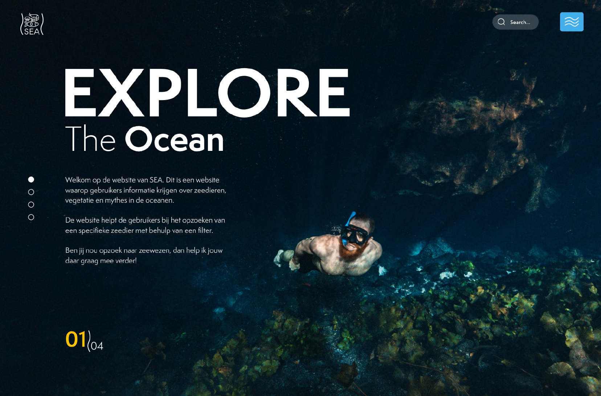
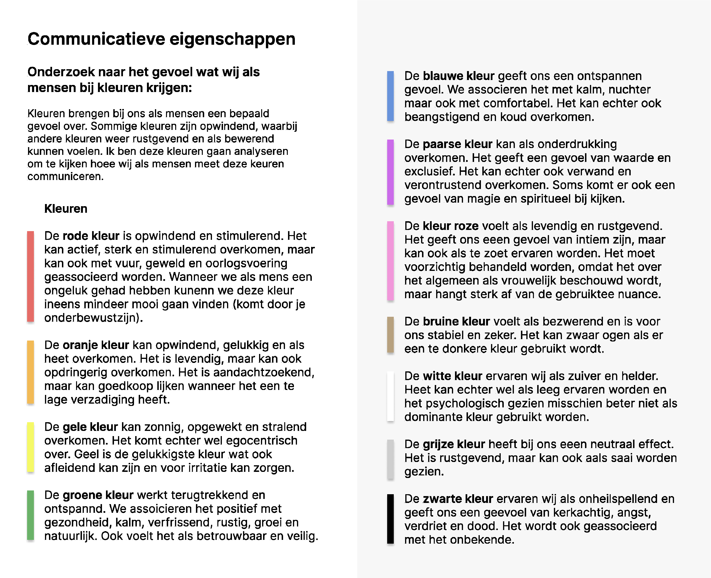
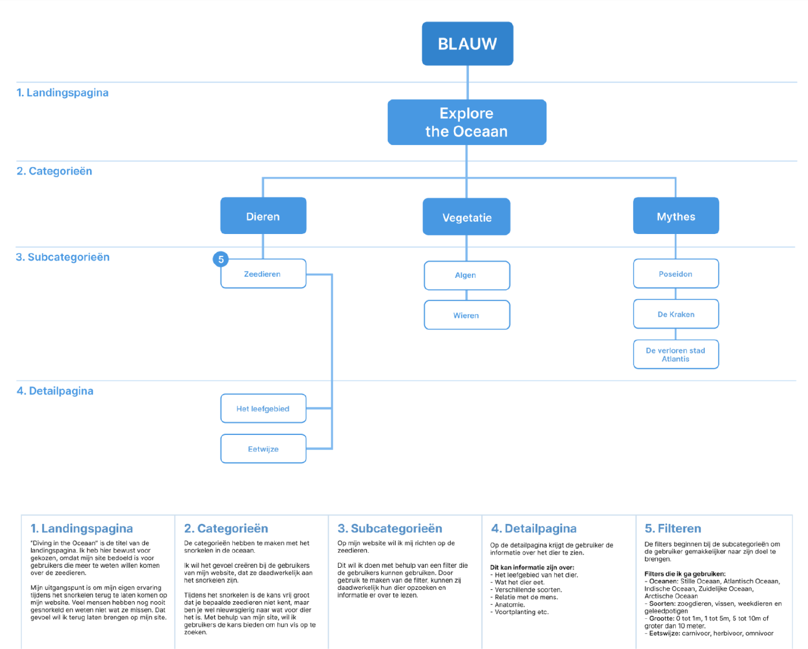
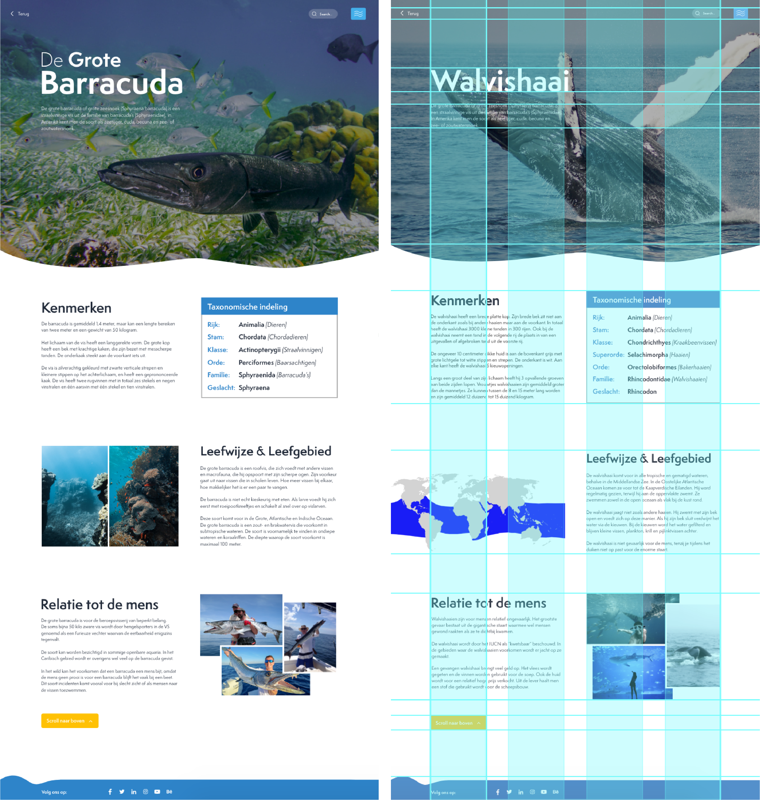

Voor het vak grid en kleur heb ik de opdracht gekregen om vanuit een zelfgekozen kleur een website te ontwerpen naar keuze. Ik moest hierbij rekeningen houden met consistentie, gridgebruik en visuele hiërarchie. Voor dit project heb ik gekozen voor de kleur blauw, ik altijd erg gefasineerd was naar de oceaan. Dit komt doordat het water erg onbekend blijft. Wist je trouwens dat de aarde voor meer dan 70% uit water bestaat, en maar 10% van de hele oceaan ontdekt is. Ook vond ik het erg leuk om vroeger veel te gaan zwemmen in de zee, rivieren, meren en zwembaden. Ik voelde me aaltijd een vis in het water en mij leek het een erg interessante uitdaging om een website te ontwerpen over het ontdekken van de oceaan.

Doel van mijn website
“Het doel van de website SEA om de gebruikers meer informatie te geven over het zeeleven onderwater en de mysterieuze plekken die door verschillende wetenschappers en duikers zijn gevonden.”
Voorbereidingen ontwerpen
Het onderwerp voor mijn website is het ontdekken van de oceaan. Hierdoor heb ik zelf moeten nadenken over de kleuren die ik wilde gaan gebruiken voor mijn website. Kleuren brengen bij ons als mensen een bepaald gevoel over. Sommige kleuren zijn opwindend, waarbij andere kleuren weer rustgevend en als bezwerend kunnen voelen. Ik ben deze kleuren gaan analyseren om te kijken hoe wij als mensen met deze kleuren communiceren en welke kleuren het beste op mijn website passen. Uit mijn onderzoek heb ik gezien dat wij als mensen blauw het meeste associëren met ontspanning en innerlijke rust. Ik associeer de kleur blauw ook met ontspanning. Ik kon als kind soms wel heel druk zijn, maar na een middagje zwemmen kwam ik helemaal tot rust. Dit hielp mij verder ook om beter te presteren op school, echter is dit de laatste maanden minder geworden vanwege corona.

Indeling pagina's
Nadat ik de kleuren heb bepaald ben ik gaan kijken naar de pagina's die ik wil gaan ontwerpen voor mijn website. Ik heb daarbij een sitemap gemaakt met categoriën, subcategoriën en een detailpagina. Deze pagina's moest ik laten terugkomen omdat deze ook in de randvoorwaarden stonden. De sitemap ziet er als volgt uit:

Grid & Hiërarchie
Op mijn website heb ik ook gebruik gemaakt van een grid. In totaal heb ik voor 3 verschillende grids gebruikt voor 3 verschillende pagina’s. Ik heb namelijk een grid gebruikt voor de landingspagina en categorie pagina’s, voor de filterpagina en detailpagina. Doordat ik een grid had toegevoegd aan mijn website kwam mijn website er erg strak en netjes uit zien. Je ziet precies hoe de afbeeldingen en broodteksten met elkaar in verband staan.

Ontwerpkeuzes onderbouwen
Mijn website bestaat uit veel verschillende soorten elementen. Ik wil ervoor zorgen dat bepaalde elementen erg consistent op elkaar gaan lijken, maar toch hele andere functies hebben. Dit heb ik gedaan d.m.v. het golf-element. Dit is een element die op verschillende pagina’s terug komt in een ander manier. Het logo van de website SEA bestaat uit 2 golfjes die met daarin de naam en een plaatje van vissen. Deze zelfde golfen zijn op verschillende manieren terug te vinden op de website. De voorbeelden hiervan zijn: de hamburger-menu, de footer en de grote afbeelding op de detailpagina.
Dit is een vorm van consisency die op een unieke manier terug te vinden is op mijn website.